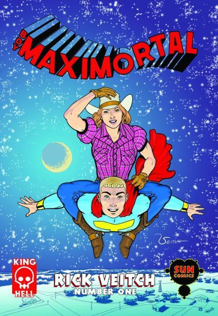

Seven years before The Amazing Adventures of Kavelier and Clay, Rick Veitch married the larcenous history of the comics business to the outrageous themes and characters of his infamous Brat Pack universe, creating one of the most startling and uncompromising visions of the super-hero archetype ever put to paper.

Boy Maximortal continues the story of True-Man, now a teenager hiding from an increasingly desperate military while trying to come to grips with powers far beyond those of normal men, all played against a backdrop of the sleazy underworld of comic book publishing. Veitch’s superhero deconstruction digs deep into the roots and heart of a cultural mythos that has come to define our times.